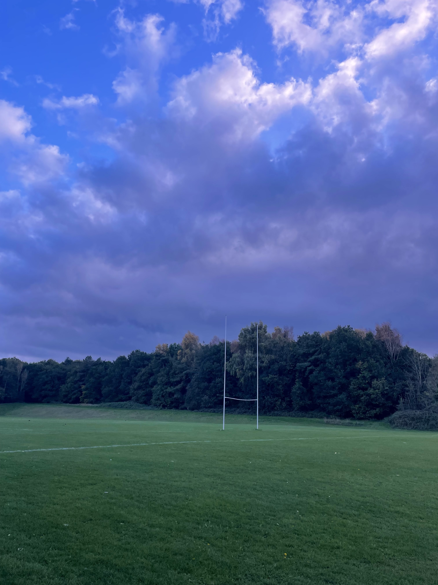
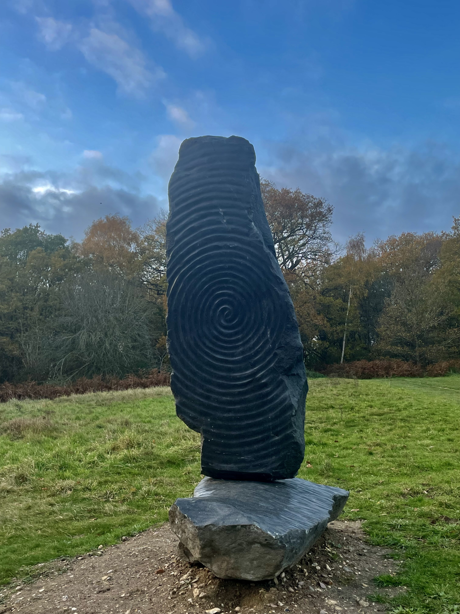

You need to be closer to UEA Broad to unlock the trails 🌿
About the Trails

There are 6 main trails around the UEA campus, ranging from 1.5–2.5 km each:
- Pink Trail: 2.3 km
- Gray Trail: 2.5 km
- Blue Trail: 2 km (also includes the Fair Weather Route: 1.8 km)
- Orange Trail: 1.5 km
- Purple Trail: 2.3 km
- Green Trail: 1.7 km
These trails run through different habitats around the River Yare and the campus grounds, providing a mix of woodland, lakeside, and riverside scenery. Their purpose is to help students and the community explore campus, stay active, and enjoy local wildlife — all while keeping the campus green, accessible, and flourishing.
The maintenance of the trails is managed by UEA Estates and the UEA Conservation & Wildlife Society. They were originally supported by lottery-funded community wildlife projects, and refreshed in 2020 with help from UEA+Sport.
UEA Moves
These trails sync with the UEA Moves activity-tracking app. You earn points for walking or running the routes, which can be exchanged for rewards on campus 🎁
Pink Trail
Short route past UEA’s sports pitches, with live match vibes and easy links to West Campus and Colney Lane parkrun.
- Walk beside multiple UEA sports pitches (rugby, football, lacrosse, baseball)
- Good chance to see matches/training, especially on Wednesdays
- Connects towards West Campus, hospital, and research park
- Overlaps with the busy Colney Lane parkrun route on Saturday mornings
- Easy, short route with open fields and active atmosphere
Quick Stats:
- Distance: 2.3 km
- Approx. steps: 3000
- Approx. calories: 120
Purple Trail
Art-heavy loop around UEA’s sculpture park, a mini outdoor gallery walk.
- 15+ sculptures curated by the Sainsbury Centre
- Pieces by big-name artists (Elisabeth Frink, Antony Gormley, Henry Moore)
- Iconic campus architecture by Norman Foster + Denys Lasdun
- Ancient oaks and a chill natural setting
Quick Stats
- Distance: 2.3 km
- Approx. steps: 3000
- Approx. calories: 120
Gray Trail

Campus-core loop with fun pop-culture stops and a bit of UEA history.
- Fully wheelchair-accessible route
- Takes you straight through central campus
- “Avengers HQ”
- The Ziggurats also featured on an album cover by The Streets
- Drama Studio where Matt Smith trained
- Mix of iconic architecture and classic UEA student landmarks
Quick Stats
- Distance: 2.5 km
- Approx. steps: 3250
- Approx. calories: 130
Blue Trail

Historic park energy with big old trees, classic buildings, and chill garden spaces plus an optional riverside add-on.
- Earlham Park’s heritage landscape
- 600-year-old trees and an old rockery
- Earlham Hall (16th-century building)
- History tied to the Gurney family, early Barclays connections, and Elizabeth Fry
- Former rose garden and Dutch Garden (Norfolk’s first Silent Space)
- Optional add-on: connects into the Fair Weather
Quick Stats
- Distance: 2 km
- Approx. steps: 2750
- Approx. calories: 110
Green Trail

Calm waterside walk with big sky views, loads of wildlife, and iconic UEA scenery.
- Sweeping views of the UEA Broad from multiple angles
- Reflections of Norwich’s big skies + the Ziggurats in the backdrop
- Tons of fish species in the Broad
- Frequent bird activity (herons, gulls, ducks, cormorants, etc.)
Biodiversity
Spring & Summer wildlife:
- Spring Snowflake: rare woodland flower
- Bee Orchid: found in grassland around June–July
- Sedge & Reed Warblers: small summer-visiting birds that hang out in reeds
- Cuckoo: distinct call + known for laying eggs in other birds’ nests
- Grass Snake: swims the Broad from April–September (harmless + super chill)
Autumn & Winter wildlife:
- Water Rail: shy wetland bird you might hear squealing in the reeds
- Kingfisher: bright blue/orange flash by the water, hunts small fish
Quick Stats
- Distance: 1.7 km
- Approx. steps: 2500
- Approx. calories: 100
Orange Trail

Chill woodland walk with strong seasonal color changes, quiet wildlife moments, and a riverside stretch with grazing cattle.
- Bluebells in spring + orange/red woodland tones in autumn
- Wooded paths just minutes from the main campus
- Plenty of small woodland animals (especially grey squirrels)
- A tree-lined section following the River Yare
- Rare-breed cattle grazing the marshland (around since 2012)
Biodiversity
Spring & Summer wildlife
- Wasp Spider: big yellow–black striped web-builder found in grasslands
- Common Whitethroat: scratchy songbird seen April–September
- Ruby-Tailed Wasp: tiny metallic blue/pink parasitic wasp
- Red Admiral: classic black/red/white butterfly
- Daubenton’s Bat: hunts low over the water around dusk
- Banded Demoiselle: shiny blue/green damselfly near slow-flowing water
- Norfolk Hawker: bright green-eyed dragonfly, uncommon elsewhere but thrives in Norfolk
Year-round / habitat wildlife
- Wet woodland supports willow + alder
- Fen areas host spiders, small mammals, and reed-dwelling species
- Meadows encourage beetles, bees, and pollinators
Quick Stats
- Distance: 1.5 km
- Approx. steps: 2250
- Approx. calories: 90
Fair Weather Route

Chill riverside detour with peaceful vibes, open views, and a good chance to spot grazing cows in warmer months.
- Walks right alongside the River Yare
- Soft, open scenery perfect for warm-weather days
- An enclosed grazing area where cows hang out during spring–summer
- Calm waterside atmosphere with wildlife around the banks
- Connects smoothly from the Blue Trail as an optional add-on
Quick Stats
- Distance: 1.8 km
- Approx. steps: ~2400
- Approx. calories: ~105